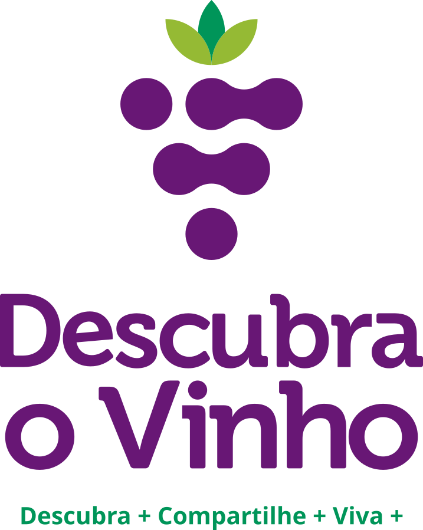
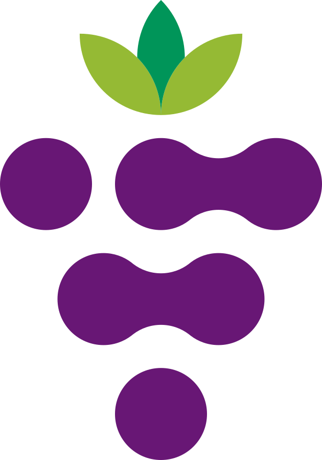

Viaje
Serra Gaúcha em três dias: um roteiro sem pressa
Onde dormir, quais vinícolas pedem agendamento e por que vale acordar cedo no vale.
Sistema de design · v1
Paleta, escala tipográfica, grade, blobs e os componentes reutilizáveis (cabeçalho, busca, cartão, rodapé) que se repetem em todos os templates. Todos os valores vêm de dov-tokens.css.
Roxo primário
#681775
Marca, CTAs, links, categoria ativa
Roxo secundário
#9158A4
Hover de links, blobs, gradações
Lilás claro
#D1B3D2
Bordas, filetes, blobs, placeholders
Off-white / rosé
#F3E8E8
Fundo de respiro entre seções
Azul-marinho
#202D42
Todo o texto e o rodapé
Verde escuro
#009559
Acento: tag de destaque, ícones
Verde-limão
#95BA34
Sublinhado de hover, detalhes finos
Verde menta
#74C29A
Blob secundário, fundo de tag
Branco / Preto
#FFFFFF · #000000
Fundo padrão das páginas. Preto só nas versões do logo.
Branco sobre roxo · 9,3:1 · AAA
Marinho sobre off-white · 12,4:1 · AAA
Roxo sobre branco · 9,7:1 · AAA
Branco sobre verde escuro · 3,4:1 · só texto ≥ 24px
Limão nunca com texto branco — usar marinho
Display / H1 hero
Cormorant 400 · 64/1.04
O vinho começa no lugar
H1 matéria
Cormorant 500 · 56/1.04
Serra Gaúcha em três dias
H2 seção
Cormorant 500 · 38/1.10
Harmonize com calma
H3 / título de cartão
Cormorant 500 · 24/1.15
Uvas que ninguém pediu e todos amaram
Kicker / categoria
DM Sans 500 · 12 · +.16em
Saúde & Ciência
Lead / olho
DM Sans 400 · 21/1.60
Um roteiro curto para quem quer entender terroir sem decorar rótulos.
Corpo
DM Sans 400 · 18/1.75
A altitude muda a acidez, o solo muda o corpo e o vento muda a casca. É por isso que dois vinhos feitos com a mesma uva, a trinta quilômetros de distância, não têm nada a ver um com o outro.
Meta / data
DM Sans 400 · 13
12 mar 2026 · 6 min de leitura · por Ana Ferraz
| Papel | Tamanho / linha |
|---|---|
| H1 hero | 38 / 1.06 |
| H1 matéria | 34 / 1.08 |
| H2 seção | 27 / 1.10 |
| H3 cartão | 22 / 1.18 |
| Lead | 18 / 1.60 |
| Corpo | 17 / 1.75 |
| Kicker · Meta | 11 · 13 |
Uma única H1 por página. Cormorant nunca em bold — o peso máximo é 500. Números sempre tabulares em datas, letras do almanaque e paginação.
Desktop · referência 1440
Conteúdo 1200 · 12 colunas de 68 · gutter 32 · margem 120
Grade de cartões: 3 colunas na listagem, 2 em destaques, conteúdo + sidebar na matéria.
Tablet · 768–1024
Margem 48 · gutter 24 · cartões em 2 colunas
Menu passa a hambúrguer a partir de 1024.
Mobile · 375–390
Margem 20 · 1 coluna · gutter vertical 32
Área de toque mínima 48×48.


Três formas em SVG. Entram como imagem posicionada dentro de uma seção overflow: hidden, nunca como máscara. No máximo um blob por seção, e só em hero, busca, chamada do Almanaque e 404. Opacidades: lilás .45–.55 · menta .26–.35 · roxo .14.
| Uso | Proporção | Exportar | Peso alvo |
|---|---|---|---|
| Hero da home | 16:9 | 1920×1080 | ≤ 200 kB |
| Destaque da matéria | 3:2 | 1600×1067 | ≤ 160 kB |
| Cartão de notícia | 3:2 | 800×533 | ≤ 70 kB |
| Cartão em destaque | 4:3 | 1200×900 | ≤ 110 kB |
| Imagem no corpo | 3:2 ou 4:5 | 1200 de largura | ≤ 120 kB |
| Retrato / autor | 1:1 | 240×240 | ≤ 20 kB |
O hero é imagem única, não carrossel: priority no next/image. Fotografias sempre com luz natural; nada de filtro roxo por cima.
Descubra + Compartilhe + Viva +
Ativo: roxo + filete roxo 2px
Hover: roxo + filete limão 2px (150ms)
Sticky no scroll: só a linha branca de 92px, encolhendo para 68px.
Menu em tela cheia sobre o off-white, com um blob lilás no canto. Itens em Cormorant 27px, altura de toque 54px, filete de 1px entre eles.
A busca aparece já aberta no topo do menu — no mobile é o caminho mais curto para o conteúdo. O Almanaque é o único item com botão cheio.
Padrão · altura 72px · raio 999px · borda lilás 1px
Foco · borda roxa 2px + anel de foco (acessibilidade de teclado)
enoturismo na serra|
Sugestões · aparecem a partir de 3 caracteres, com 250 ms de debounce
Hover — título em roxo, filete limão sob a imagem, foto 1.03× (250 ms)
Viaje
Onde dormir, quais vinícolas pedem agendamento e por que vale acordar cedo no vale.
Compacto (listas laterais e relacionados)
Mercado
Tags e filtros
Botões e paginação
Um portal para descobrir o universo do vinho sem solenidade: viagens, harmonizações, mercado, ciência e curiosidades.
Uma carta por semana, com o que vale ler e beber.
© 2026 Descubra o Vinho · Todos os direitos reservados
Aprecie com moderação. Venda proibida para menores de 18 anos.


